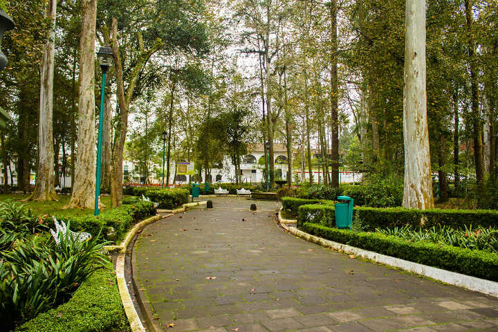

Conoce los encantadores parques de Xalapa
Los parques son parte de la vida diaria: lugares para relajarse, pasear o simplemente sentarse a ver pasar el tiempo entre árboles, fuentes y ese clima fresquesito que se disfruta mucho.

El Jardín Botánico: un refugio vivo de plantas y tranquilidad
El lugar perfecto para olvidarse de todo y conectar con la naturaleza típica de la región.

Animate a conocer el nuevo santuario de vida silvestre en Xalapa
En naturalia puedes pasar un fin de semana en familia con diferentes actividades divertidas que no te puedes perder.

El cerro mas conocido de la ciudad
Es un volcán extinto convertido en un parque ecológico, que hizo erupcion hace aproximadamente 30 mil años.

El lago artificial que se volvió un símbolo de la ciudad
Los lagos es un lugar que se cubre de neblina sobre la superficie al amanecer.